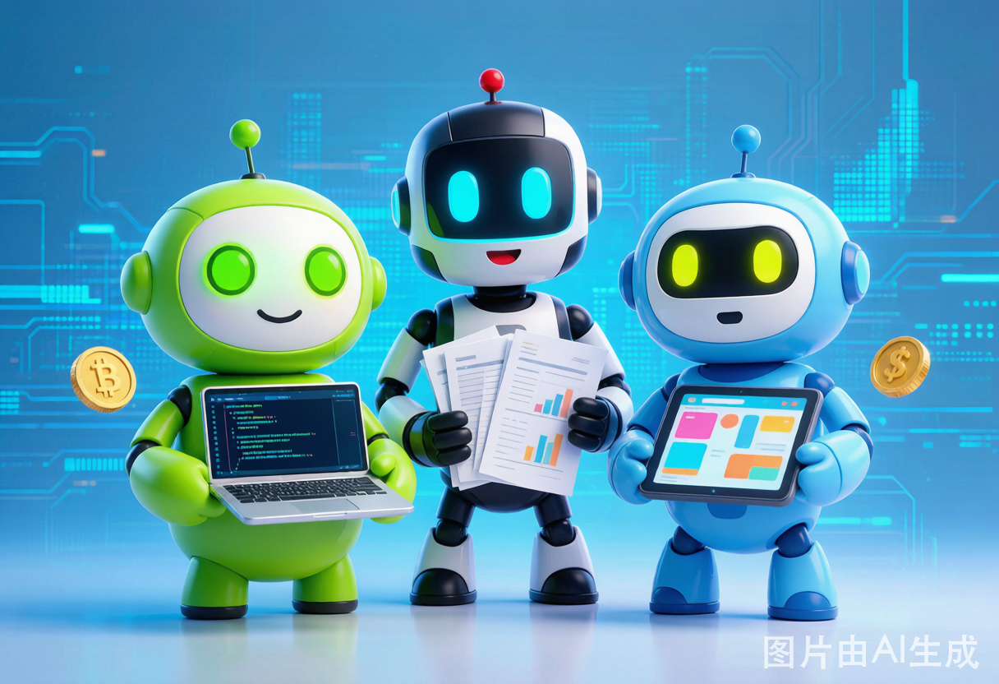

01
三大选手，闪亮登场
出厂设定，就不太一样
先把三位选手认个脸熟。一句话总结它们的"人设"：
TRAE Work —— 程序员的亲儿子。先把写代码这摊事做透，再顺手兼顾点文档和 PPT。
WorkBuddy —— 给不会写代码的同事准备的"电脑操作小蜜"。一句话就能让它在你电脑上把活办了。
QoderWork —— 从设计出发的"创意外挂"。产出物能直接交付，设计师和前端看了都直呼内行。
说白了：一个偏工程，一个偏办公，一个偏创意。接下来挨个拆解 👇